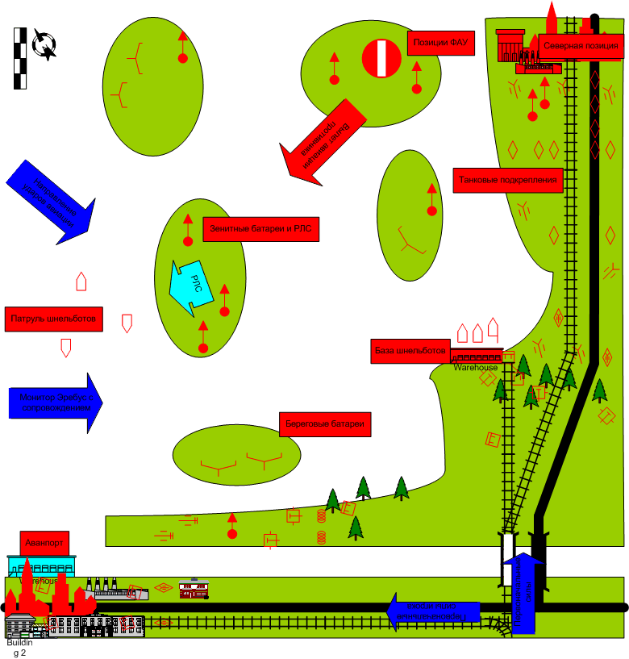

Graphics
Assets
Management
By
05 июня 2003

Strategic Objects:
1)
Main port
terminal (gameplay building: port pack house) – Reinforcements for player
(ТИП-4)
2)
Auxiliary
port (gameplay building: port pack house) – German Schnellbote cede operation if
taken by player (ТИП-
не предусмотрен)
3) Радарные станции (Radar Station) – Снижение эффективности зениток и береговых батарей (последнее – из-за резкого сокращения поля зрения) (ТИП-5).
4) Вокзал в городке на севере (Railway pack house) – приход подкреплений противнику (ТИП-3).
Войска игрока.
С
какими вступает:
Линейная пехота;
Танки «Кромвелль» (“Cromwell”);
БТР (АРС) М3 и «Универсал» (“Universal”); Крусейдер ПВО (“Crusader AA”);
4.5-дм полевая пушка (4.5” FG); 17-фунтовая пушка ПТО (17 Pdr AT Gun), 40-мм Зенитный автомат Бофорс,
(Bofors 40mm AAG);
Истребитель Спитфайр 14 (Supermarine
Spitfire XIV);
Грузовики поддержки (Support vehicles).
Приданные:
Катера (Torpedo boat Vosper);
Монитор Эребус (Monitor Erebus);
Отряд Командос (Commandos Trp);
Лидер-Разведчик(Spy).
Подкрепление:
Штурмовые саперы (Assault troop
Royal Engineers),
Огнеметный танк/тяжелый танк «Черчилль» (поздняя модификация) (Churchill Heavy
tank /Late version/ with Flamethrower), современный средний танк Комета (Comet Advanced
medium tank);
Истребитель-бомбардировщик Хаукер Темпест (Hawker Tempest FB); бомбардировщик Ланкастер (Avro Lancaster bomber).
Какую информацию увидит игрок при выборе этой миссии, какой бонус получит игрок по прохождению.
Была выбрана последняя миссия большой (4-й) главы. Миссия обязательна для прохождения.
Разыгрывается завершение кампании 44г. (для англичан). Освобождены, в основном, все государства Западной Европы. Армии западных союзников встали на пороге Германии.
Получены все возможные бонусы, получены все основные образцы техники. Бонус – переход в следующую главу.
Преимущества врага
1) РЛС береговые батареи и зенитки составляют мощную береговую укрепленную зону.
2) Воздушное прикрытие самолетами Ме-262 (прекращается после вывода из строя радиолокационного поста /или двух/, может быть заранее исключено, если при прохождении кампании выполнено специальное задание в предыдущей миссии). После этого – только Фокке-Вульф и изредка.
Преимущества игрока
1) Монитор Эребус
Основное задание
Нейтрализация
строящихся позиций ФАУ.
По выполнении задания игрок
получает:
Переход в следующую
главу.
Под задание:
1)
Нейтрализация укрепленных артиллерийских позиций внешней
акватории, (уничтожение или захват РЛС).
По выполнении задания игрок
получает:
Возможность использовать
истребители-бомбардировщики, тяжелые бомбардировщики (при условии захвата поста)
или монитор Эребус (при захвате или уничтожении поста) по своему выбору
для нейтрализации береговых батарей, охраняющих внешнюю акваторию. (Потеря монитора Эребус означает поражение игрока)
Игроку сообщается, что ему придется выполнить дополнительное задание №3 и, при
желании, он может выполнить дополнительное задание №4.
Осуществляется:
Нейтрализация укрепленных артиллерийских
позиций – Лидер-разведчик
обеспечивает высадку группы командос с резиновых лодок. Командос уничтожают
передвижные РЛС. После чего отходят на лодках.
2)
Отразить атаки противника из северной
группировки.
По выполнении задания игрок
получает:
Возможность перехода по мостам на северный
берег Шельды. Если атака не отражена, по выходу юнитов
противника в соответствующую скриптовую зону, засчитывается поражение
игрока. В ходе выполнения данного задания игрок может сразу приступить к
выполнению основного задания, действуя исключительно шпионом, морскими и
воздушными юнитами, но атаки с севера при этом не прекратятся, успех любой из атак
означает поражение игрока.
Сила атка все время нарастает.
Осуществляется:
Основными силами игрока.
3)
Уничтожить северную группировку германских войск. (Уничтожить все
юниты противника с соответствующимID – северной
группировки. Захватить железнодорожный пакгауз.)
Выдается после
отражения первой атаки с севера.
По выполнении задания игрок
получает:
Прекращение нарастающих атак с севера. См.
Также описание дополнительного задания №3.
Осуществляется:
Наступлением основных сил игрока после получения подкрепления.
Дополнительные
задания.
1)
Уничтожение шнельботов во внешней
акватории.
По выполнении задания игрок
получает:
Возможность высадки отряда коммандос на
острова внешней акватории для уничтожения поста РЛС. При этом игрок получает
задание №2.
Осуществляется:
Легкими морскими юнитами игрока.
2)
Захват аванпорта Антверпена (портового пакгауза №1) для получения
подкреплений.
Выдается после выполнения подзадания 1
основного задания.
По выполнении задания игрок
получает:
Возможность вызова подкреплений для наземных
войск (типы подкреплений см. выше). Без этих юнитов невозможно успешно атаковать
позиции противника на севере.
Осуществляется:
Наступлением основных сил, при поддержке авиации и подкрепления из аванпорта
3)
Нейтрализация базы торпедных катеров (захват портового пакгауза
№2).
Выдается при подходе войск игрока в зону
вокруг базы.
По выполнении задания игрок
получает:
Возможность выхода монитора Эребус во
внутреннюю акваторию укрепленной зоны. Если игрок действует в рамках
воздушно-морской стратегии, то может сразу перейти к выполнению основного
задания.
Осуществляется:
Наступлением основных сил по суше и/или монитором и
своими катерами.
Все вариации сценария прохождения связаны с наличием у игрока Монитора Эребус и поэтому в альфе разыграны быть не могут. В полноценной камапнии предполагаются вариации прохождения миссии связаные с возможным отсутствием у игрока монитора Эребус.
Описание скриптовых событий.
1) подкрепления тяжелыми танками с вокзала на севере основной группировки (северной) противника и, соответственно, усиление атак после уничтожения поста РЛС.
2) активация второй группы шнельботов через три минуты после захвата аванпорта для патрулирования внутренней акватории (группа стоит на базе и в патрулировании внешней акватории не участвует)
3) выход оставшихся в живых шнельботов за пределы карты на ее северном краю по разрушению или захвату базы шнельботов.
4) пока шнельботы еще на карте, всякое подсвечивание Эребуса вызывает у них желание немедленно его атаковать.